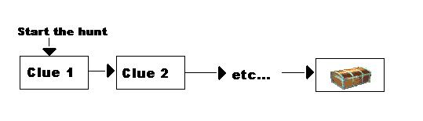
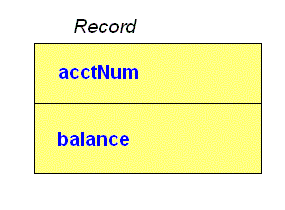
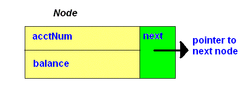
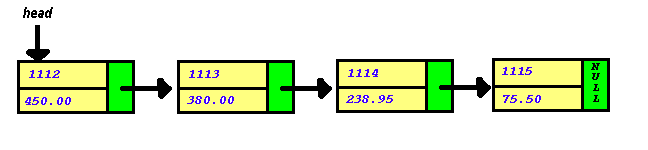
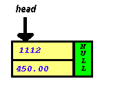
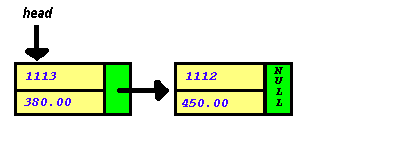
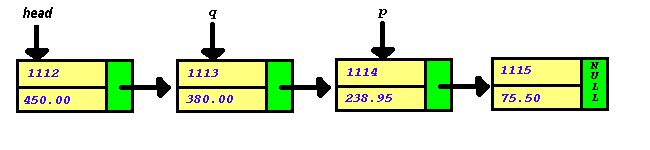

We have used the concept of a list in many applications
in both Computer Science 1 and Computer Science 2. We often use lists in everyday
life. We might keep a "to do" list of jobs that we need to complete.
We might have a grocery list when we go to the store. If we have a party, we
probably have a list of people that we are inviting to the party. In computer
science, a list is considered to be an ADT (abstract
data type). It is a collection of data together with a set of operations on
that data. Some common operations on a list include:
creating an empty list,
inserting a data item into the list,
removing a data item from the list,
searching for an item, and
determining how many items are in the list.
Often lists are maintained in some particular order. For example, the "to
do" list might be maintained by keeping items at the top of the list for
which completion is more important. A list of people invited to a party might
be kept in alphabetical order. To maintain such an ordered list requires more
than just sorting the data. It is often the case that new items need to be inserted
into the list after it has been sorted. Similarly, items may need to be deleted
after the data has been placed into sorted order.
To date, when we wished to implement a list, we have used an array. If the
list is not maintained in order, then inserting an item is accomplished by placing
the item at the end of the array. The linear
search can be used to find an item in the list. Removing an item presents
more difficulty. First the index of the item to be removed must be determined.
Then the item must be deleted. Now there is an empty array location that is
available. Since all of the available array locations are kept at the end of
the array, one solution might be to shift all items below the deleted item up
one array position.
When an ordered list is maintained, insertion of an item involves moving items
down one array position until the correct position (based on the order of the
list) is detemined. Then the item is inserted. When a list contains a large
number of items, such shifting of items to insert or delete may be impractical.
NOTE: For each of the following exercises, indicate answers
on the answer sheet.
Exercise 1:(Multiple Choice) Given a non-sorted array with 6 locations containing the following items
(note location 5 in the array is empty) and with next_available_location = 5:
index array value
0 10
1 22
2 40
3 80
4 100
5
What would be the value of next_available_location if 10 were deleted?
A. 0 B. 1 C. 2 D. 4 E. 5 Exercise 2:(Multiple Choice) Given an array with 5 locations containing the following items and next_available_location = 0:
index array value
0 10
1 22
2 40
3 80
4 100 What would be the result of adding the value 5?
A. index array value
0 10
1 22
2 40
3 80
4 5 B. index array value
0 5
1 10
2 22
3 40
4 80 C. index array value
0 5
1 22
2 40
3 80
4 100 D. index array value
0 5
1 10
2 22
3 40
4 80
5 100 E. can not add 5 because the list is full
Exercise 3:(Multiple Choice)Given a non-sorted array with 6 locations containing the following items (note location 5 in the array is empty):
index array value
0 10
1 22
2 40
3 80
4 100
5
What would be the result of deleting the value 40 and inserting the value 50?
A. index array value
0 10
1 22
2 50
3 80
4 100
5 B. index array value
0 50
1 10
2 22
3 80
4 100
5 C. index array value
0 10
1 22
2 80
3 100
4 50
5 D. index array value
0 10
1 22
2 80
3 100
4 100
5 50 E. index array value
0 10
1 22
2
3 80
4 100
5 50
Exercise 4.P: (This is a pretest Question) (Multiple Choice)Given a sorted array with 6 locations containing the following items (note location 5 in the array is empty):
index array value
0 10
1 22
2 40
3 80
4 100
5 What would be the result of adding the value 50?
A. index array value
0 10
1 22
2 40
3 80
4 50
5 100
B. index array value
0 10
1 22
2 40
3 50
4 80
5 100
C. index array value
0 10
1 22
2 40
3 80
4 100
5 50
D. index array value
0 50
1 10
2 22
3 40
4 80
5 100
Exercise 5.P: (True/False)If the following declarations have been made:
int xarr[5];
int next_available_location;
and the current value of next_available_location is 5, it is possible to insert one more item into the list
A second drawback of using an array implementation for a list is that an array
with 1000 elements is always allocated space for 1000 elements whether or not
all of these memory locations are required when the program is executed. If during a run of the program only 100 items are added to the array, then 900
spaces are unused. If during another run of the program we wish to add 1500
items to the array, we will be out of luck because the array can only hold 1000
items. The array is an example of a data type that has memory allocation that
is static. In the next section, we discuss a second
type of data for which memory is allocated on demand.
B. Static and Dynamic Memory Allocation
Static Memory Allocation
C++ data types may be divided into 3 groups - fundamental, structured, and
pointer data types. We learned in Lab
2 that the fundamental
data types consist of the ordinal types int, char, short [int], long [int],
unsigned char, unsigned short [int], unsigned int, unsigned long [int], and
the float and double data types. The structured data types are the array,
structure (struct),
class and file data
types. Variables of the fundamental and structured data types have static
memory allocation and are called statically allocated variables.
This means that the programmer decides on the number and structure of the variables
when the program is written. When the program is compiled and loaded,
the compiler will allocate the corresponding number and type of memory locations.
Execution of the program cannot change the number, size, or structure of
memory locations when static memory allocation is used. As we noted in
the previous section, a drawback of static memory allocation is that the size
of memory allocated can not be changed. For instance when an array with 1000
elements is allocated space, exactly 1000 elements are allocated whether or
not all of these memory locations are required when the program is executed.
This may not be an efficient use of memory.
Exercise 6
: (Multiple Choice)Which of the following is
not one of the fundamental data types?
A. int
B. pointer
C. char D.
short E.
none of the above Exercise 7: Write a declaration statement that will
statically allocate an integer variable x. Exercise 8: (Multiple Choice)The compiler allocates
memory storage for statically allocated variables during which of the following phases?
A. execution
B. loading
C. linking
D. compilation E.
none of the above Exercise 9.P: (True/False) Variables that are of the fundamental or the structured data types are statically allocated.
Exercise 10.P: (True/False) If the following declaration has been made:
int grade_array[30][5];
when the program is compiled and loaded, only 1 location is set aside for grade_array with the understanding that if the program
needs to use more locations, it can use up to 150.
The locations the program uses will be allocated as needed. Dynamic Memory Allocation
The pointer data type is used in connection with dynamic memory allocation.
Dynamic memory allocation (and deallocation) occurs
during the execution of a program. A variable allocated then is called
a dynamically allocated variable or simplya
dynamic variable. Dynamically allocated variables are not declared
in the program, but variables that "point to" or refer to the dynamically allocated
variables are declared in the program.
C. C++ Pointers
Pointer variables are variables that point to (contain the
address of) a memory location. Pointers can reference any type of data except
the file data type. An example of variable declarations containing pointers
to integers, double, char and struct data types follows:
1 int* pNum1,*pNum2; //pNum1 and pNum2 are integer pointers
2 double* pNum3; //pNum3 is a pointer to a double
3 char* pWord; //pWord is a pointer to a char
4 struct BankRec
5 {
6 double balance;
7 double credit;
8 };
9 BankRec* pBank; //pBank is a pointer to a BankRec struct
10 struct Node
11 {
12 BankRec data;
13 Node* next; // members of a struct can be a pointer to the current struct
14 };
Notice that in C++ the asterisk "*" is used to indicate a pointer. Each of the pointer variables above can contain
the address of a memory location. The placement of
the * does not have to be as shown above. All of the following are valid C++
statements to declare an integer pointer:
int* intPtr;
int * intPtr;
int *intPtr;
In this lab, we prefer to place the * immediately after the type as in the first example above.
Exercise 11: (True/False) Pointer variables can contain any type of data except the file data type.
Exercise 12: (True/False) The following statement correctly declares a structure type ClientRec. struct ClientRec
{
double balance;
double credit;
ClientRec* nextRec;
};
Exercise 13:
(Multiple Choice) Which of the following declaration statements will statically allocate memory locations?
A.int *onevar; B. char twovar; C. struct onestruct
{
float xvar;
int intvar;
}; onestruct *ystruct; D. float *threevar; E. All of the above
Exercise 14.P:
(True/False) The following declaration: int * p,
q ;
creates two pointer variables that can be used to reference integer variables.
Exercise 15.P:
(Short Answer) Show a C++ statement to declare charPtr to be a pointer to a char.
Ina previous lab we learned that the typedef
statement can be used to make a program easier to modify and to read.
Consider now a new and improved method for declaring the same above variables.
First we set up an appropriate type definition section:
Exercise 16:(True/False) The following statement renames the type "pointer to unsigned integer" to be "myAgePointer": typedef unsigned int* myAgePointer;
Exercise 17:(True/False) The following is a correct way of
renaming a pointer to a book struct:
typedef book* BookPointer;
struct book
{
string title;
unsigned int isbn;
float cost;
};
Exercise 18:(Multiple Choice) Which of the following is NOT a
valid usage of typedef
A. typedef int** ppInt; B.struct time
{
int hour,
minute,
second;
}; typedef time* pTime; C. typedef character* pChar; D. all of the above are valid
As a result of the declarations in lines 10 and 14 above, we will have memory
set aside for two pointers (to integers) and one integer. Assume memory
for these variables is provided at the following addresses:
ADDRESS
MEMORY CONTENTS
VARIABLE ALLOCATIONS
1000
?
pNum1
1004
?
pNum2
1008
?
num
pNum1 is a pointer to an integer memory location. It is not yet
assigned to point to any particular memory location. This can be done
by using the C++ operator new. The new
operator creates a new dynamic variable of a specified type and returns a pointer
to this variable. For example, the instructions:
pNum1 = new
int; pNum2 = new int;
dynamically assign a memory location (say 2644) for pNum1 to reference and
a memory location (say 2400) for pNum2 to reference. In each of these
cases, the pointer variable contains the address of the memory location associated
with a dynamic variable. Now we have a picture similar to the following:
ADDRESS
MEMORY CONTENTS
VARIABLE ALLOCATIONS
1000
2644
pNum1
1004
2400
pNum2
1008
?
num
.
2400
?
.
2644
?
pNum1 and pNum2 each point to a location in memory (a dynamic
variable) that is capable of storing an integer. No values have been stored
in the memory locations to which they point. To access the value of a
variable pointed to by a pointer variable, a special operator is used.
In C++ this is done by using *
in front of the pointer variable name as in the following (that is, *pNum1
refers to (names) the memory that pNum1
points to):
*pNum1
= 31; *pNum2 = 20;
Now the picture is as follows:
ADDRESS
MEMORY CONTENTS
VARIABLE ALLOCATIONS
1000
2644
pNum1
1004
2400
pNum2
1008
?
num
.
2400
20
.
2644
31
The contents of the memory location associated with the pointer variable is
the address of the memory location associated with the dynamic variable pointed
to by the pointer. The value associated with pNum1
is an address 2644. The value associated with *pNum1
is 31 (the contents of address 2644). The data type of a pointer variable
must be the same as the data type of the dynamic variable to which it points.
Suppose we want to exchange the values pointed to by
pNum1 and pNum2.
There are two ways we can proceed. First, we could exchange the contents
of memory locations 2400 and 2644 as follows:
num
= *pNum1 ; *pNum1 = *pNum2 ; *pNum2 = num;
Alternately, we could exchange the addresses stored in the memory locations associated
with the pointers as follows:
A pointer can also point to a variable that has been statically allocated. The
& operator
(or address operator) is used to accomplish this. If we wished for pNum1
to point to the statically allocated variable num,
this could be accomplished by typing
pNum1 = # //this places num's address into pNum
After this statement, pNum1
would contain num's
address. In the memory example above, pNum1
would contain 1008.
Exercise 19: (True/False) Assume we have defined p1 and p2 to be integer pointer variables and we have dynamically allocated memory for each variable. A snapshot of memory is shown below:
If we assume that memory locations 2016 and then 3020 are the next locations to be allocated, which of the colde segments below would cause memory to be changed as shown below:
Address Memory Contents Variable Allocations
2000 3020 p1
2004 2016 p2
... ... ...
2016 2
... ... ...
3020 2
A. p1 = new int;
p2 = new int;
*p1 = 2;
*p2 = *p1;
B. *p1 = new int;
*p2 = new int;
*p1 = 2;
*p2 = 2;
C. p2 = new int;
p1 = new int;
*p1 = 2;
*p2 = 2;
D. *p1 = new int;
*p2 = new int;
*p1 = 2;
*p2 = p1;
Exercise 22.P: (Short Answer) Given the following code, what would be stored in *p1 after the code is executed?
int *p1, *p2;
int x = 42;
p1 = &x;
Exercise 23.P: (Multiple Choice) What is printed by the following code?
int *ptr1, *ptr2;
ptr1 = new int;
ptr2 = new int;
*ptr1 = 100;
ptr2 = ptr1;
*ptr2 = 55;
cout << *ptr1 << " " << *ptr2;
A. 100 55
B. 55 100
C. 55 55
D. 100 100
Most of our work will involve pointers to structures. We need some C++
notation to reference the elements of a structure pointed to by a pointer.
Assume the following definitions and declaration:
struct
BankRec { int acctNum; int balance; }; BankRec *bankPtr;
Assume bankPtr is associated with memory location 796.
To allocate memory for a BankRec structure, we use the C++ statement:
bankPtr = new
BankRec; //Assume this makes bankPtr point to location
2160
Here is the picture:
ADDRESS
MEMORY CONTENTS
VARIABLE ALLOCATIONS
796
2160
bankPtr
.
2160
?
(Memory for one structure
starting at 2160)
In C++, to reference a field in a structure pointed to by the pointer, bankPtr,
we use the arrow operator (->):
bankPtr->fieldname
For instance, the following statements assign values to the 2 fields in
the structure referenced by bankPtr:
A pointer value is a memory address except when the pointer value is NULL.
NULL is a special
C++ constant pointer value that is used to give a value to a pointer variable
that would not otherwise have a value. It means "this pointer does not point
anywhere." NULL
can be assigned to a pointer variable of any type. The NULL
identifier is defined in a number of libraries, including <iostream>
. In C++ the constant NULL actually
contains the value 0.
A dynamically allocated memory location referenced by a pointer should be released
when it is no longer needed. This can be accomplished by using the C++ delete
operator. This operator eliminates a dynamic variable and returns the memory
that the dynamic variable occupied so that the memory can be reused.
delete pointerName;
After the call to delete,
the value of the pointer variable, like pointerName
above, is undefined.
struct PersonRec
{
string name;
int age;
};
typedef PersonRec* PersonRecType;
PersonRecType personPtr;
personPtr = new PersonRec;
which one of the following statements is incorrect in assigning the value "John Smith"
to field "name" of the dynamically created memory, referenced by personPtr?
A. personPtr.name = "John Smith";
B. string newName = "John Smith";
personPtr->name = newName;
C. personPtr->name = "John Smith";
D. (*personPtr).name = "John Smith";
In the following sections, we will discuss one of the many uses of pointers.
We start this discussion with an introduction to a linked list.
D. Linked Lists
Have you ever engaged in a treasure hunt in which you are handed
a clue that leads you to another clue and so on until you find the treasure?
The first clue links (or points) to the next clue. The second clue links to
the third, etc. The picture below is a graphical representation of this treasure
hunt.

The treasure hunt example, portrays the idea of a linked list.
A linked list is a list implemented using pointers. A linked
list is not fixed in size but can grow and shrink while your program is running.
The linked list contains a set of items and pointers (or links). The first link
points to the first item. The second link points to the second
item and so on. Finally, the last link is an indication that there are no more
items in the list.
A linked list, such as the one depicted in the treasure hunt,
is a simple example of a dynamic data structure. It is called a dynamic
data structure because each of the boxes is a variable of a struct
type (or class type)
that has been dynamically allocated with the new
operator. In a dynamic data structure, these boxes, known as nodes,
contain pointers in addition to the data. The pointers in the treasure hunt
have been diagrammed as arrows.
Pointers can refer to any data type (except a file type) but they
are commonly used to reference a structure data type where one field of the
structure is a pointer. The pointer field can be used to connect or link
similar structures together thereby forming a linked list. A linked
list is usually thought of as a dynamic data structure consisting of
structures of the same type (nodes) linked together by pointers. One field
of each structure contains a pointer that points to the next node in the linked
list.
For example, consider the following struct definitions:
struct Record
{
int acctNum;
float balance;
};
struct Node
{
Record data;
Node* next;
};
We note that Record is a struct type with 2 fields in which we
can store a banking customer's account number and also his/her current account
balance.

Also, Node is a struct type in which we can store a Record
which has 2 fields and a pointer to another struct of type Node. Graphically,
it can be represented by the box containing acctNum, balance, and next.

Using the declarations above and using additional C++ dynamic operators, a
dynamically allocated ordered (in order by ascending account numbers) list of
these nodes may be created at run time. For example, the following list
could be created:

Notice that there must be a special pointer that points to the first node in
the list (head) and that NULL
is used to indicate that there are no more nodes in the list.
There are generally many operations that are performed on ordered lists. Creating
an ordered list, inserting nodes in the list in the correct position, deleting
nodes from the list, searching the list for a given value, and counting the
number of nodes in the list are some of the most common. You will recall
that ordered lists can also be created and manipulated using an array implementation.
What would be the advantage of creating and manipulating the list using pointers
instead of arrays?
By using a pointer implementation, memory space will be allocated only
when needed. Arrays are statically allocated and a pointer list is dynamically
allocated. Therefore, there will be a more efficient use of memory since
memory for a struct of type Node will be allocated only when it is determined
that a new customer record should be created.
A pointer implementation would result in huge improvements in efficiency
with some operations. For, example, inserting and deleting nodes in
the list is more time efficient (conserves CPU time) than using arrays.
For example, suppose your job as a directory service technician requires
that you maintain an ordered list of 50,000 customers. Suppose an array
is used to maintain this list. Given a name, you should be able to locate
the phone number quickly, delete a customer from the list and insert new customers
in the list. To delete a customer from the list maintaining the list
in order, for example, requires that you move all customers "up" one position
in the array (if an array implementation is used). If a pointer implementation
is used, there is absolutely NO data movement required.
Note that when a record is deleted from an ordered list, only the value of
the previous pointer must be changed. This record will no longer appear
in the ordered list. However, we now have a problem. Note that the
record still resides in memory and that this is a waste of computer memory since
this information is no longer needed. Remember that C++ provides the special
operator delete
which will return the indicated memory cell back to the system. This is called
deallocation of memory. We say that the statement, delete
p, will "free up" this memory location so that it can be used by
other dynamically allocated variables.
E. Linked List Operations
When the list ADT was discussed, we mentioned that common operations on
a list include creating an empty list, inserting a data item into a list,
removing a data item from the list, searching for an item, and determining
how many items are in the list. In this section, we will discuss how these
operations are implemented when a linked list is used to implement the list.
In this section, we will consider snippets of code to introduce each of
the operations. In the next section, we will encapsulate the definition
of the list ADT in a C++ class.
Creating an empty list
Suppose we have defined nodes in our list as follows:
struct Record
{
int acctNum;
float balance;
};
struct Node
{
Record data;
Node *next;
};
typedef Node* NodePtrtype;
The statement
NodePtrType head;
creates the variable head,
that can be used to point to the first node in the list. Like other uninitialized
variables, it is undefined. To what value should you initialize head to
indicated that the list is empty? It should be set to NULL
to indicate that it does not point to any node.
Adding a node to the list
To insert a node into the list, first memory has to be dynamically
allocated, data has to be inserted into the node, and a pointer must be
changed to add the node. For example, the following code will add a new
node to the beginning of the list.
head = new Node; //dynamically allocate a new node
head->data.acctNum = 1112; //place a value in the acctNum
head->data.balance = 450; //place a value in the balance
head->next = NULL; //place NULL in the next field
Graphically, the list would now look like:

To add a second node at the beginning of the list, the following code might
be used:
Node *p; //create a node pointer
p = new Node; //dynamically allocate space for a new node
p->data.acctNum = 1113; //place a value into the acctNum field
p->data.balance = 380.00; //place a value into the balance field
p->next = head; //make p point to the node that head points to
head = p; //update head to point to the new node
Graphically, the list would now appear as:

Make sure you understand each statement in the code above before continuing
with this section.
Examining each node in the list
Now that we know how to add nodes to a list, we need to learn how to move from the
head pointer to each node in the list and examine each node. For example, we might wish
to search for a particular node, or count the nodes in the list, or print all the nodes
in the list. Consider the following code that prints all the nodes in the list.
Node *cur = head; //start a pointer at the beginning of the list
while (cur != NULL) //as long as we haven't reached the list's end
{
//print the account number and balance
cout << "Account # = " << cur->data.acctNum << endl;
cout << "Balance = " << cur->data.balance << endl;
//move to the next node
cur = cur->next;
}
Exercise 28:
Load the files
structs.h,
inlab8.h,
inlab8.cc, and
main8a.cc to your account. Modify inlab8.cc
to implement the print method to print out the items
in the list. Each node is printed on a line with the account number then a tab then the balance. To output a tab
character, use cout << "\t"; Do not output any labels. Just put the contents of the node. For instance
1114 395.67
Turn in a script log with a cat of inlab8.cc, a compile, and four runs with the data files
Ex28_data.0,
Ex28_data.1,
Ex28_data.2, and
Ex28_data.3. Of course, you will need to copy these files to your account
prior to the runs. When you run your program use redirection to read from
the various file (i.e. a.out < Ex29_data.0).
Deleting a node from the list
Often, it is necessary to delete an item from the list. For example, consider
the list below:

Suppose we wish to delete the node pointed to by p and we know that q is pointing
to the node previous to p. The following code will accomplish the necessary
delete.
q->next = p->next; //take p out of the linked list
delete p; //deallocate p's memory
F. The C++ Class Destructor
In C++ normally a class type is used to encapsulate the data and functions
which are associated with a linked list. Member functions which are
normally provided include constructors, a function which allows one to
print all of the nodes in a list, one or more functions to insert nodes
into the list and functions which allow nodes to be removed from the list.
In Lab 5 we learned that the C++ class has special member functions (methods)
called constructors.
Constructors are methods which can be used to initialize data members as
discussed previously. We say that constructors are used for the creation
of objects. In the preceding exercise you should have realized
the need for the deallocation of memory when records are no longer needed
in a linked list. Noting this need for deallocation will help you to recognize
the need for another special method called a destructor.
A destructor is a special member function (method) which
"frees" up or deallocates memory and we say that it is used for the destruction
of objects. It can do other tasks as well such as close a file.
Let's say that we have a class called ListClass which contains
data members and methods to allow us to create and maintain an ordered
linked list of banking customers. Then a destructor for the ListClass
object would be used to deallocate all records found in the list.
The following comments regarding destructors are appropriate at this time:
A class may have many constructors but only one destructor.
Destructors are called (activated) when the function that created the desired
object is terminated.
Destructors do not have arguments.
The prototype for a destructor is always denoted as: ~NameOfClass(); For example, if we have a class called ListClass, then the prototype
for the class destructor would be denoted as: ~ListClass();
The implementation for the destructor should deallocate dynamically allocated
data members. Therefore, the destructor definition for the ListClass
object may appear as:
ListClass::~ListClass()
{
//head is a private data member of ListClass which
//points to the first node in the list
Node *q = head;
while (q != NULL)
{
//delete the node pointed to by head
head = head->next; //move head to the next node
delete q; //deallocate memory
q = head; //make q point to the new head
}
}
Exercise 29: Use the files inlab8.h and inlab8.cc
from Exercise 28. Copy the files
main8b.cc and
insertInOrder.cc to your account.
Modify the file insertInOrder.cc so that it finishes the implementation of the method insertInOrder. This method appends the
record 'newData' into sorted position in the linked list. If the list is empty, the new node is the new head of the list. When you compile,
To compile the program, type:
aCC inlab8.cc insertInOrder.cc main8b.cc
you will need to include this file on the compile line as well as inlab8.cc. Turn in a script log with a cat of insertInOrder.cc
, a compile, and six runs with the data files
Ex29_data.0,
Ex29_data.1,
Ex29_data.2,
Ex29_data.3,
Ex29_data.4,
and
Ex29_data.5. Of course, you will need to copy these files to your account prior
to the runs. Use file redirection to read from each file.
Exercise 30:Use the files inlab8.h and inlab8.cc from
Exercise 28. Copy the files
main8c.cc and
deleteIthNode.cc
to your account. Modify the file deleteIthNode.cc so that it finishes the implementation of the method deleteIthNode. This method deletes
the ith item from a list of items. When you compile, you will need to include
this file on the compile line as well as inlab8.cc.
The compile line should be:
aCC inlab8.cc deleteIthNode.cc main8c.cc
Turn in a script log with a cat of deleteIthNode.cc , a compile
, and four runs with the data files
Ex30_data.0,
Ex30_data.1,
Ex30_data.2,
Ex30_data.3. Of course, you will need to copy these files to your account
prior to the runs. Use file redirection to read from each file.
Exercise 31.P: (Multiple Choice)Suppose we have a linked list of integers. Each node in the list is of Node type and contains an integer and a pointer to the next item in the list. The variable first points to the first node in the list. Which of the code segments below will add a new node containing the value 55 to the beginning of the list?
A. first = new Node;
first->value = 55;
first->next = first;
B. Node* temp = new Node;
first->value = 55;
temp->next = first;
C. Node* temp = new Node;
temp->value = 55;
temp->next = first->next;
first = temp;
D. Node* temp = new Node;
temp->value = 55;
temp->next = first;
first = temp;
Exercise 32.P: (Multiple Choice) Suppose we have a linked list of integers. Each node in the list is of Node type and
contains an integer and a pointer to the next item in the list. The variable first
points to the first node in the list. Which of the code segments below will properly delete the last node
in the list?
A. Node* cur=first;
while(cur != NULL)
{
cur = cur->next;
}
delete cur;
cur = NULL;
B. Node* cur = first;
while(cur->next != NULL)
{
cur = cur->next;
}
delete cur->next;
cur->next = NULL;
C. Node * cur = first->next;
while (cur != NULL)
{
cur = cur->next;
}
delete cur;
cur = NULL;
D. None of the above.
You have reached the end of Lab 8!!
----- End of Lab 8 - Pointers and Linked Lists -----
Complete the Exercises on the Answer
Sheet.
Turn in the Answer Sheet and the printouts required by the exercises.